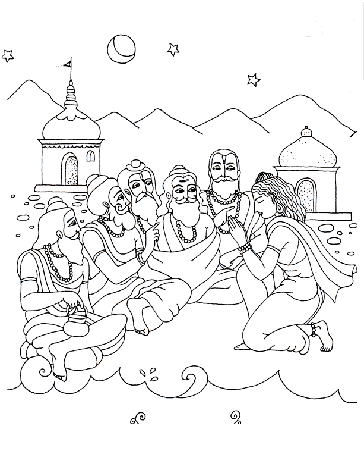

Brahma es hijo de Visnu, posee gran sabiduría y Visnu le dio la tarea de crear el universo. Visnu mismo es el Supremo, pero se verá él también afectado por las tres energías materiales?
Siva es una energía de Visnu que nació como hijo de Brahma, él también es un gran sabio y gran devoto de Krishna pero acaso él también será afectado por las tres modalidades?
Sin llegar a ninguna conclusión, se dio la tarea al sabio Bhrigu Muni, quien es hijo de Brahma, para que encontrara la respuesta…